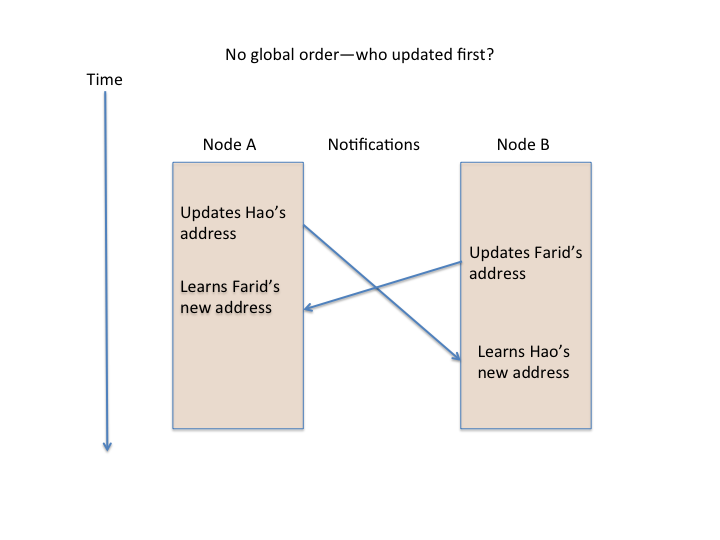
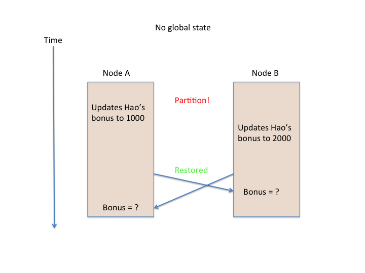

Week 7, Wednesday (February 26, 2014)
What makes a cloud application “distributed”?
Our system model (Takada, Chap. 2)
- Nodes run independently
- No shared memory or shared clock
- Network may reorder or lose messages
- Nodes can fail but do not have bugs and cannot be hacked
- Handling buggy or hacked nodes imposes even more overhead (see Byzantine fault tolerance)
Implications
- A node only has fast access to its own state
-
Global time order cannot be observed
- From the system’s perspective, there is no global order unless the system enforces one

- Global information is potentially out of date or inconsistent

-
Crashes differ from network partitions
- A crashed node cannot update
- A partitioned node can update
- A node on the other side of the partition cannot tell if updates are occurring inside it
The consensus problem
Nodes achieve consensus if they all agree on some value, such as:
- Value of an entry that two nodes have updated
- Ordering of actions performed by several nodes
- Completion of a shared action
CAP: Tradeoffs between Consistency, Availability, Partitioning
Brewer’s CAP “Theorem” (2000): Consistency, availability, partition tolerance—pick any two:

Source: Distributed systems for fun and profit, Ch. 2. Note: Paxos, Two-phase commit (2PC), and Gossip are algorithms
Not really a theorem
- More an argument to expand the design space
- Can’t choose to have availability without partition tolerance
- If your system stops at a partition, it is unavailable
- There are many kinds of consistency
-
You will make different tradeoffs for different services in a system:
- Fine to be off by one on count of Twitter followers for Beyoncé
- Not so fine to book two weddings in the same room the same time
- Consider compensation methods
- Seth Gilbert and Nancy Lynch proved a specific case of CAP Theorem
- But their assumptions do not apply to all systems
- More in their 2012 article
Guide to readings for next class
Read Distributed systems for fun and profit, from “A system model”, up to but not including “Strong consistency vs. other consistency models”.
You can skim:
- The formal definition of the consensus problem
- The section, “The FLP impossibility result”
The key points:
- Different assumptions about what can fail and how it can fail
- How those assumptions can make algorithms simpler or more complicated
- The zones of the CAP Venn diagram